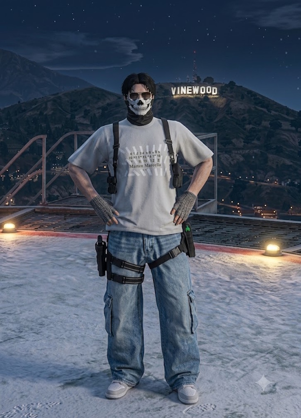

01 | Identifikation
BEWERBUNG · DIRECTOR OF PRESS · VERTRAULICH
OOC Daten
OOC NAMEPatrick
OOC ALTER17
DISCORDnotpatrickkk
AKTIVITÄT / TAG4–7 Std
IC Daten
IC NAMEPatrick Hawk
STATIC ID#44756
ZIEL-FRAKTIONWeazel News
DERZEITIGE FRAKTIONS.A.N.G.
Pressebadge
ANGESTREBTER RANGDirector of Press
STATUSBewerbung eingereicht
KLASSIFIZIERUNGGEHEIM · VERTRAULICH
PRESSE AUSWEIS
#44756

Pressefoto
PRESSE PASS
Authorized Media Personnel